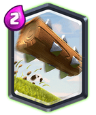

Legendary Card: The Log

The Log’s popularity is reducing. The buff to Bats increased the cards by an insane margin and Zap has become necessary for countering them. Even though Zap can’t kill those popular Goblin Barrels, it is easy to counter them with those Bats.
So why is The Log #3?
Answer is simple: It is still the most versatile Legendary Card. It can find a role in any deck and do the job pretty. It can take care of any ground swarms, crushing them in its rage and can reset the charge of Prince, Dark Prince and Battle Ram ; the Dash of a Bandit and is the only card, yeah I repeat, the only card that can reset the jump of Mega Knight.
SO what if its not popular? Its a great option to buy and add in your deck!